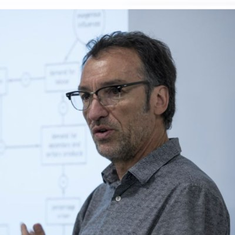

Faculty
Learn from renowned faculty
You’ll study in person with leading scholars in demography, economics, geography, political science, public health, sociology, statistics, and data science.
Why UCLA?
UCLA is the nation’s #1 public university, according to U.S. News & World Report. Few other universities in the U.S. or abroad boast UCLA’s combination of faculty expertise, computing infrastructure, and interdisciplinary culture. Our distinguished community has:
- 17 Nobel laureates
- 41 MacArthur Fellows
- 12 National Medal of Science recipients
- $1.6 billion in annual research funding
UCLA is located in Los Angeles, one of the most dynamic and vibrant cities in the world.
Our core faculty
MPDS’s internationally acclaimed faculty come from across the university, with fields in demography, economics, geography, political science, public health, sociology, statistics, and data science. Faculty are selected for their excellent teaching and mentoring records, as well as their integration of data science and AI into their courses.
-
Martha Bailey
Program Director
Economics, Demography
-
Onyebuchi Arah
Epidemiology, Statistics
-
Hiram Beltrán-Sánchez
Demography, Public Health
-
Jennie Brand
Sociology, Statistics
-
Jamie Goodwin-White
Geography
-
Chad Hazlett
Statistics, Political Science
-

Patrick Heuveline
Demography, Sociology
-
Adriana Lleras-Muney
Economics
-
Juliana Londoño Vélez
Economics
-
Ian Lundberg
Sociology
-
Ann Owens
Sociology
-
Naomi Sugie
Sociology
Questions about the program?
Join a live Zoom info session with the faculty.